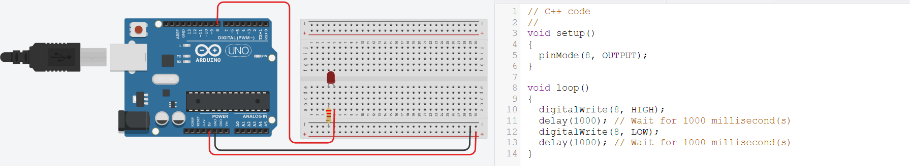
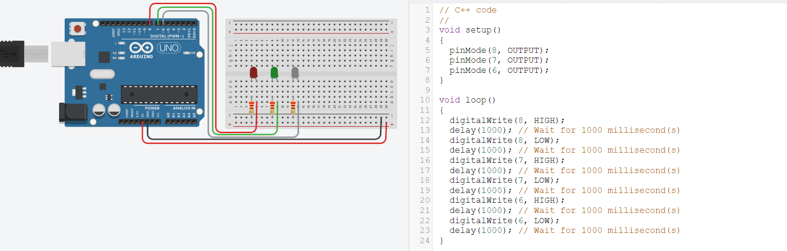
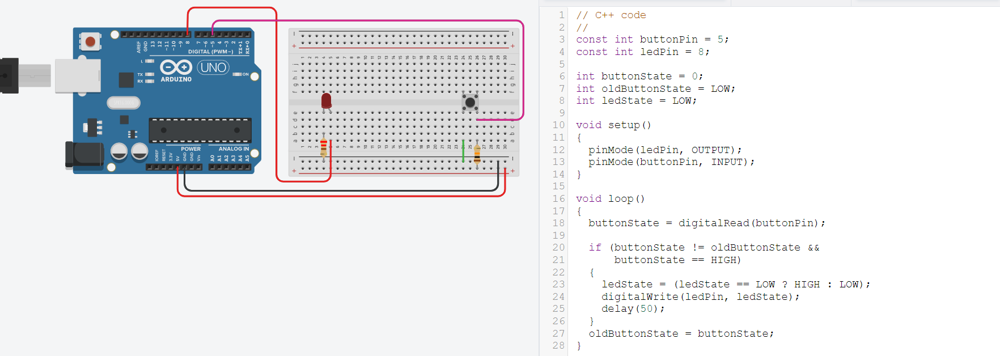
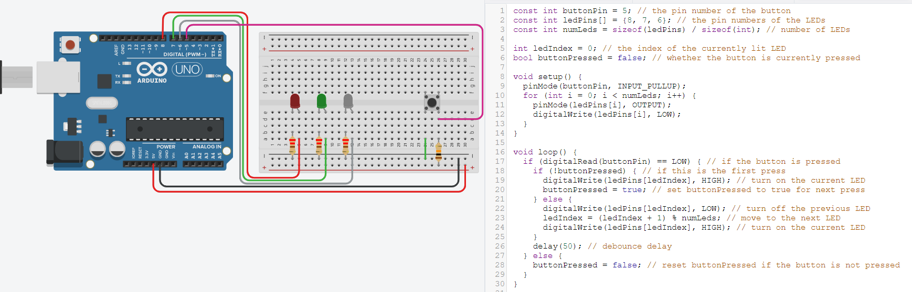
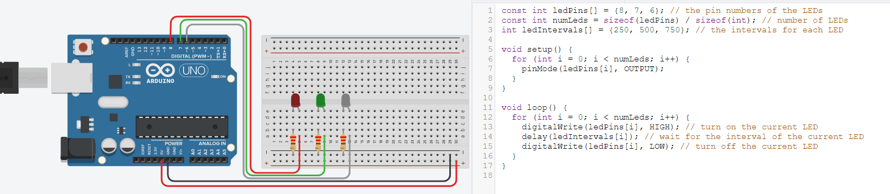
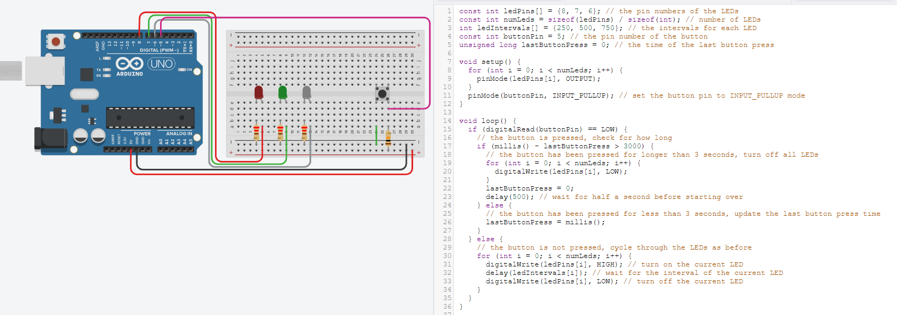

Basic Output Devices
Digital I/O
The Uno uses the ATMega328 processor, which has 14 digital I/O pins (Some of these pins are multifunctional)
A digital I/O pin can input or output digital (0, 5V) signals
Digital I/O Functions
The Arduino system provides 3 functions for the manipulation of digital I/O.
Need to:
- Configure the pin (pinMode()), before
- Using the pin
digitalWrite (pin, {LOW|HIGH})
Outputs a LOW (0V) or HIGH (5V) to a digital pin
The digital pin must be configured as OUTPUT
Driving an LED
An LED lights up (conducts) if a correct voltage is applied to the pins
When the LED conducts, current is allowed to pass through. The LED drops about 2V
We need to limit this current (10~20mA) otherwise, we will get a short-circuit
Current limiting resistor value: R = V/I
Digital Input
We can use digital inputs to read the status of the switches in a circuit.
Need to add a current-limiting resistor to prevent short circuits.
Usual value is 10 kOhm
States:
- A: normal HIGH, when closed LOW
- B: normal LOW, when closed HIGH
Internal Input Pullup Resistor
We can use the internal pullup resistor by changing the mode
pinMode(pin, INPUT_PULLUP)
Internal pullup resistor is 20K~50K which limits the current.
Problems with Mechanical Switches
When a mechanical switch is pressed, it creates transients (bouncing) which causes incorrect states to be read.
Solution:
- Software debounce
- Add a delay
- Use states
Counting with a Switch
PBSW uses internal pullup resistor.
Each time the switch is pressed, the count is incremented. The LEDs should show the binary equivalent of the count
Squence:
--, -R, G-, GR repeats
Arduino Serial Mode
The Arduino System provides a Serial Mode for displaying text messages
Uses the Uno’s serial port to transmit data to and from the board to the IDE
Allows data to be displayed in text as well as in graphical format.
Uses the Arduino Built-in library: Serial
When using Serial, you must not use the Tx,Rx pins for any I/O.
Serial Library
Use Serial to display the count value from a sketch. The sketch updates the count value and flashes an LED with a delay of 1 second between flashes.
Serial.begin(9600): Sets the data rate in bits/sec for serial data transmission
Serial.print(data), Serial.println(data): Sends data to the serial port for conversion and output. If a string of text is sent, it must be delimited with double quotes (“)
There are other functions, but usually not used in embedded circuits.
Where does the serial output go?
There is an icon/text “Serial Monitor” on both the TinkerCAD and Arduino IDE interface to show the contents of the serial monitor.
You can clear, input and output data as well as graphically chart the data you receive from the embedded system
Pushbutton SW
We keep reading the PBSW taking note of the PBswitch value
We maintain the state so that we know which part of the sequence we are currently in and when the PBSW returns to normal
Register the entire sequence as a single push
Using states
Use states to track the keypress
HIGH = normal
LOW = in a keypress
HIGH = returns to normal
Add short delay when key is pressed to remove bouncing
Record the keypress only when the sequence is complete
Analog I/O
The Uno uses the ATMega328 processor, which has 6 analog input pins.
Each analog input has a 10-bit analog-to-digital converter that can produce an equivalent binary value for an analog voltage between 0 and Vref.
Analog output is done using Pulse Width Modulation which can be used to control LEDs and Motors
Pins that can perform PWM are denoted with a ~ (Pins 3, 5, 6, 9 , 10, 11)
Analog Vs Digital
Analog signals are continuous.
Analog signals require conversion (ADC) before processing
Analog signals are real world.
Digital values are discrete e.g. 0, Vcc
Digital values are easy to process.
Digital signals need to be converted to appear to be real world signals.
Reading Analog Signals
Analog signals need to be converted to digital values before they can be processed
Analog-to-Digital Conversion required
- Sampling (at least 2X input signal frequency)
- Vref
- Timing
Simplified ADC with Arduino System
Assumes that input signals are stable and does not change quickly
Uses a default Vref = 5V
Resolution = 5/2^10 = 4.9mV
Max Read speed = 100 mS = 0.001s
Result is between 0 ~ 1023
Actuators
A component of a machine that moves/controls a mechanism in a system
An “output” device.
- Display: LED, LCD, Neopixels
- Motors: DC Motors, Stepper Motors, Servo Motors
- Valves: Water, gas
- Solenoids: controls heavier voltages, currents
- Sounds: buzzers, alarms
Display Devices
Most common output d
- LEDs
- LCD
- Dot matrix display
- Oled displays
- NeoPixels
LEDs
LEDs are semiconductor devices that, when exposed to an electric current, produce light. When compared to conventional bulbs, they are energy-efficient and last for a longer period of time. LEDs are used in lighting, displays, and indicators among other things. They come in a variety of colors and can be dimmed and controlled digitally. They are frequently found in lighting for homes and offices, automobiles, and electronic devices.
LCD Display
An LCD is a flat-panel display that creates images with liquid crystals. It has liquid crystal sandwiched between its two polarizing sheets. The orientation of the molecules in the liquid crystal changes when an electric current is applied, allowing or preventing light from passing through the display. The images seen on the screen are the result of this. Due to their low power consumption, high resolution, and compact size, LCD displays are popular in electronics. Televisions, computer monitors, smartphones, and calculators all make use of them.
I2C Interface
The I2C protocol is widely used for serial communication between integrated circuits. It supports multiple devices on the same bus and transmits data between devices via a two-wire interface. The protocol has master and slave modes, and each device has its own unique address. I2C is frequently utilized for digital devices, sensors, and microcontrollers to communicate with one another.
Identifying I2C Devices
Can be idetified using various method such as:
- Product data sheet: Information about the device's I2C address, register map, and other communication details can be found in the device datasheet.
- Scanner I2C: Software that can scan the I2C bus and identify all connected devices is known as an I2C scanner. It may be helpful in locating unknown devices.
- Software from the manufacturer: Software tools that can be used to identify and communicate with their devices over the I2C bus are provided by some device manufacturers.
- Device analyzer: I2C bus traffic can be monitored and analyzed with a specialized tool called a hardware analyzer. By analyzing the data that is exchanged on the bus, it can be used to identify devices.
Writing to L2C ICD Display
To write an I2C LCD Display, the following step is needed:
- Utilizing the SDA (data) and SCL (clock) pins, connect the I2C LCD display to your microcontroller or development board.
- To communicate with the I2C LCD display, install the necessary drivers or libraries for your development board or microcontroller.
- Send the appropriate initialization commands to the LCD display to initialize the I2C bus and the display.
- Using the appropriate library functions or code, you can send the commands or text you want to the I2C LCD display.
- Wait for the data to be processed and the display to be updated by the I2C LCD display.
Tube 7-Segment Display TM1637
A 4-digit, 7-segment LED display is typically controlled by the TM1637 chip, which is used to display numerical information in electronic devices. It has features like segment mapping and brightness control and communicates with microcontrollers through a two-wire interface. The chip can be made to show both numbers and letters and symbols. For controlling 7-segment displays in electronic projects, it is a versatile solution.
Oled Displays SSD1306
The SSD1306 is a well-known OLED display controller chip that uses a serial interface to communicate with displays. OLED displays are good for portable devices and small electronics projects because they are thin, light, and don't need backlighting. The SSD1306 is simple to integrate with microcontrollers and offers features like contrast control and scrolling. It is a convenient and adaptable option for controlling OLED displays due to its low power consumption and high contrast ratio.
NeoPixels
Neopixels, which are also referred to as WS2812 or WS2812B, are programmable RGB LEDs that each have their own microcontroller that can use to control them. They are frequently utilized in interactive installations, stage lighting, and decorative lighting due to their adaptability and vibrant colors. Neopixels are user-friendly because they can be controlled with a variety of programming languages and platforms. They are compatible with a wide range of development boards and microcontrollers, including the Arduino and Raspberry Pi.
Motors
Arduino is capable of driving and controlling DC, stepper, and servo motors among other types of motors. In order to produce motion, motors transform electrical energy into mechanical energy. In order to connect the digital or analog output pins of an Arduino to motor drivers or motor shields, power and control signals are sent to the motor. Code that is uploaded to the Arduino controls the speed and direction of the motor. In robotics, automation, and other electronic projects, they are frequently used.
DC Motor Control
Using the Arduino microcontroller, DC motor control is regulating the speed and direction of a DC motor. By connecting the DC motor to a motor driver or shield that is connected to the Arduino's digital output pins, this can be accomplished. The motor driver adjusts the voltage and current supplied to the motor in response to signals from the Arduino and regulates the motor's speed and direction. PWM or direct digital control of the motor can be programmed into the Arduino. Electric vehicles, robotics, and automation all rely heavily on DC motor control.
Motor Control with PWM
Motor control with PWM is the process of adjusting the duty cycle of a square wave signal sent by the microcontroller to control a motor's speed. An Arduino digital output pin is used to generate the square wave, which is then fed into a motor driver. Using code uploaded to the Arduino, the duty cycle can be varied, allowing for precise motor speed control. PWM motor control is frequently utilized in robotics and automation applications.
H-Bridge
An electronic circuit called an H-bridge is used to direct DC motors in the right direction. To control the motor's current flow and direction, it has four switches arranged in an "H" pattern that can be turned on and off in various combinations. It is common to use this with microcontrollers like the Arduino because it gives the motor the ability to spin forward or backward. In robotics and automation projects, H-bridges are frequently utilized.
H-Bridge Connections
There are four input/output connections in H-bridges: Inches 1, 2, 3, and 4. The motor's direction is controlled by IN1 and IN2, while its speed is controlled by IN3 and IN4. The motor is connected to OUT1 and OUT2, the H-bridge is connected to the Arduino's digital output pins IN1 and IN2, and the PWM analog output pins IN3 and IN4 are connected to the motor. Consult the H-bridge's datasheet for specific pin connections as they may vary.
Stepper Motors
Stepper motors move in precise steps, with each step representing a particular rotational angle. In order to rotate the motor shaft, they have multiple coils that are energized in a predetermined order. By sending signals to the motor's coils in the correct order, Arduino microcontrollers can control the stepper motor's direction and speed. Applications like 3D printers and CNC machines that require precise positioning use stepper motors. Typically, a stepper motor driver is used to connect the microcontroller to the motor's coils and supply the necessary power and control signals.
Servo Motors
A motor designed for precise angle rotation and position holding is a servo motor. It is frequently utilized in automation and robotics. A motor, a control circuit, and a feedback mechanism are typically its components. The servo is connected to a digital output pin on the Arduino, where it receives a PWM signal from the microcontroller to determine the desired position. The servo motor control library included in Arduino makes programming easier.
Typically Relay Module
An electronic component called a relay module enables high-power devices to be controlled by low-power signals from a microcontroller like an Arduino. It has a driver circuit, an electromagnetic switch, and a relay that can be turned on by a low-voltage signal. In automation and control systems, relay modules are used to turn on and off high-power devices like lights and motors.
Relay Connections
To connect a relay module to an Arduino, connect one of the Arduino's digital output pins to the relay module's input pin, and then connect the relay module's output pin to the device being controlled. Check that the relay module can handle the voltage and current of the controlled device. It is essential to refer to the datasheet and adhere to the suggested wiring diagram because the pin connections may differ depending on the particular relay module being utilized.
Assignmen: Programming
Simple LED controls
Controlling 3 or more LEDs
Adding a switch to the flashing lights
Use the switch in (3) to control the type of light-up of the LEDs
Modify your program in (4) to flash the LED(s) instead
Modify your program such that if you press the switch for longer than 3 seconds, the system switches off all LEDs and returns to the initial state.
